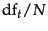
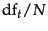
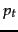
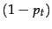
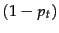
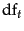
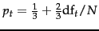

Next:
Probabilistic approaches to relevance
Up:
The Binary Independence Model
Previous:
Probability estimates in theory
Contents
Index
Probability estimates in practice
Under the assumption that relevant documents are a very small percentage of the collection, it is plausible to approximate statistics for nonrelevant documents by statistics from the whole collection. Under this assumption,
 (the probability of term occurrence in nonrelevant documents for a query) is
 and
(the probability of term occurrence in nonrelevant documents for a query) is
 and
In other words, we can provide a theoretical justification for the most frequently used form of
idf weighting, which we saw in Section
6.2.1 .
The approximation technique in Equation 76 cannot easily be extended to relevant documents. The quantity  can be estimated in various ways:
- We can use the frequency of term occurrence in known relevant documents (if we know some). This is the basis of probabilistic approaches to relevance feedback weighting in a feedback loop, discussed in the next subsection.
- Croft and Harper (1979) proposed using a constant in their combination match model. For instance, we might assume that is constant over all terms
 in the query and that
in the query and that  . This means that each term has even odds of appearing in a relevant document, and so the and  factors cancel out in the expression for
. This means that each term has even odds of appearing in a relevant document, and so the and  factors cancel out in the expression for  . Such an estimate is weak, but doesn't disagree violently with our hopes for the search terms appearing in many but not all relevant documents. Combining this method with our earlier approximation for , the document ranking is determined simply by which query terms occur in documents scaled by their idf weighting. For short documents (titles or abstracts) in situations in which iterative searching is undesirable, using this weighting term alone can be quite satisfactory, although in many other circumstances we would like to do better.
. Such an estimate is weak, but doesn't disagree violently with our hopes for the search terms appearing in many but not all relevant documents. Combining this method with our earlier approximation for , the document ranking is determined simply by which query terms occur in documents scaled by their idf weighting. For short documents (titles or abstracts) in situations in which iterative searching is undesirable, using this weighting term alone can be quite satisfactory, although in many other circumstances we would like to do better.
- Greiff (1998) argues that the constant estimate of in the Croft and Harper (1979) model is theoretically problematic and not observed empirically: as might be expected, is shown to rise with . Based on his data analysis, a plausible proposal would be to use the estimate
.
Iterative methods of estimation, which combine some of the above ideas, are discussed in the next subsection.
Next:
Probabilistic approaches to relevance
Up:
The Binary Independence Model
Previous:
Probability estimates in theory
Contents
Index
© 2008 Cambridge University Press
This is an automatically generated page. In case of formatting errors you may want to look at the PDF edition of the book.
2009-04-07